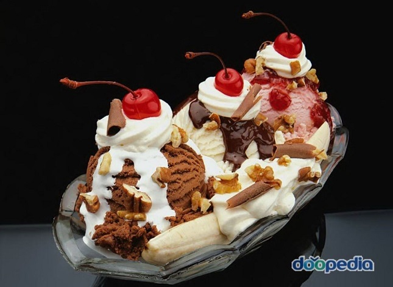

|

|
본래는 프랑스어로 ‘식사를 끝마치다’ 또는 ‘식탁 위를 치우다’의 뜻이다. 이 과정을 디저트 코스라고 하여, 영국이나 미국에서는 젤리 ·푸딩 ·케이크 ·아이스크림 ·과일 등을 낸다. 프랑스요리에서 말하는 앙트르메는 원래 정식식사에서 요리 사이에 내는 음식이었으나 현재는 식사 후의 후식을 의미한다.
앙트르메는 이미 끝마친 요리의 맛을 효과적으로 돋우기 위한 것으로 그 종류가 많으며 달걀 ·설탕 ·우유 ·크림 ·양주 ·과일 ·너트 ·향료 등을 사용하여 만드는데, 뜨거운 것과 찬 것으로 나뉜다. 뜨거운 것을 앙트르메 쇼(entremets chaud)라고 하는데, 수플레(soufflé) ·푸딩 등이 있고, 찬 것은 앙트르메 프루아(entremets froid)라고 하여 냉과(冷菓)와 아이스크림이 있다.
더운 것과 찬 것을 모두 낼 때는 더운 것을 먼저 내고 찬 것을 후에 내는 것이 순서이다. 디저트 코스로 들어가면 흡연을 해도 되고, 테이블 스피치(table speech)도 이때 한다.
|